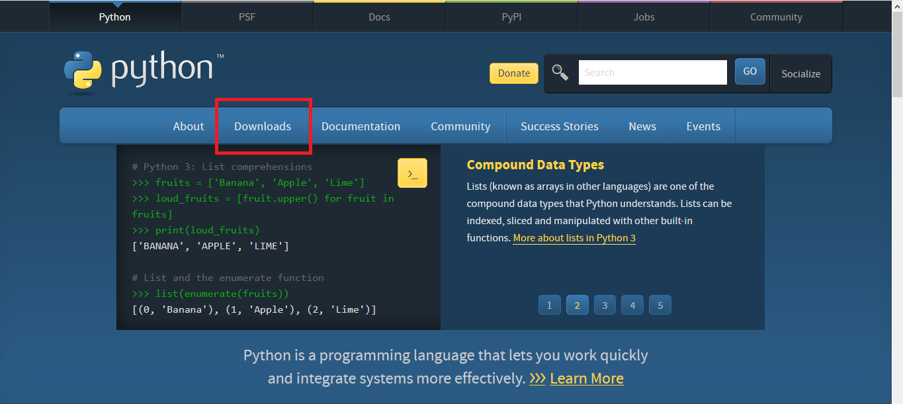
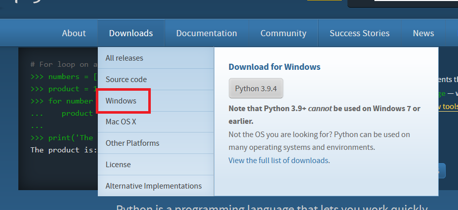
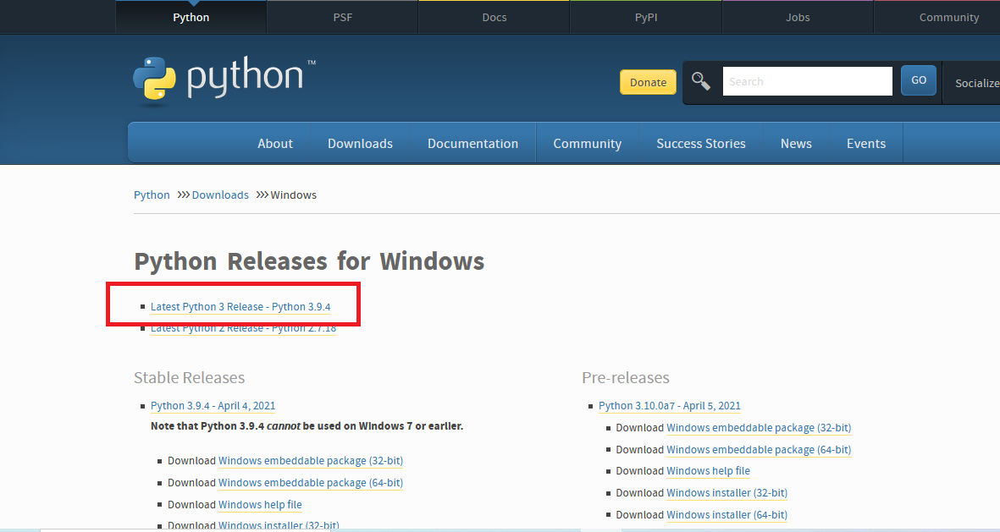
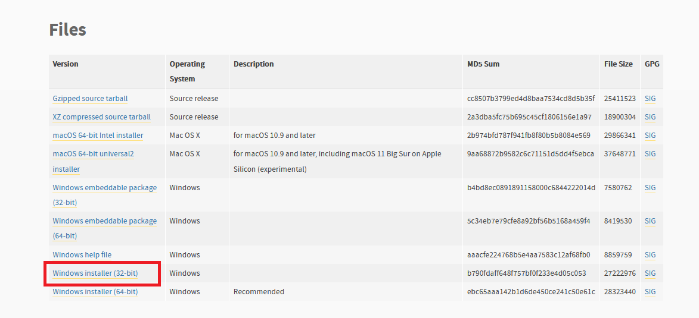
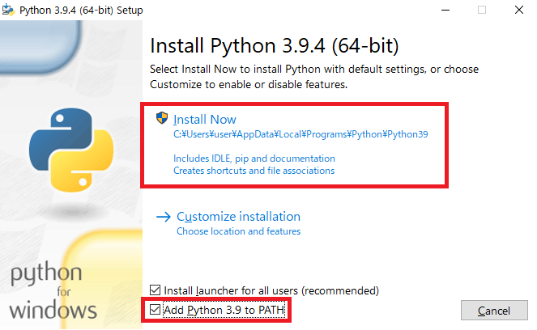
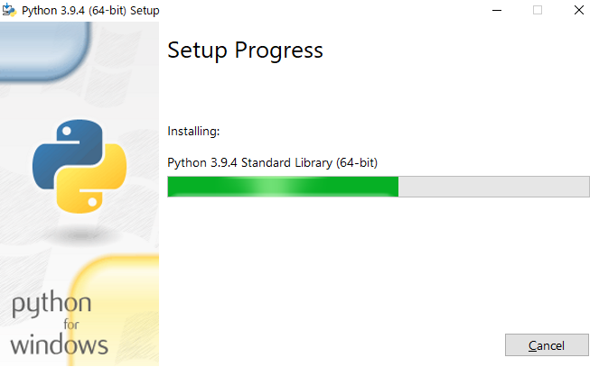
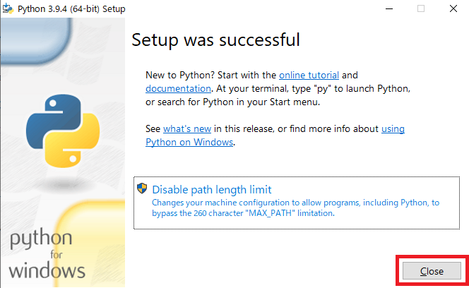
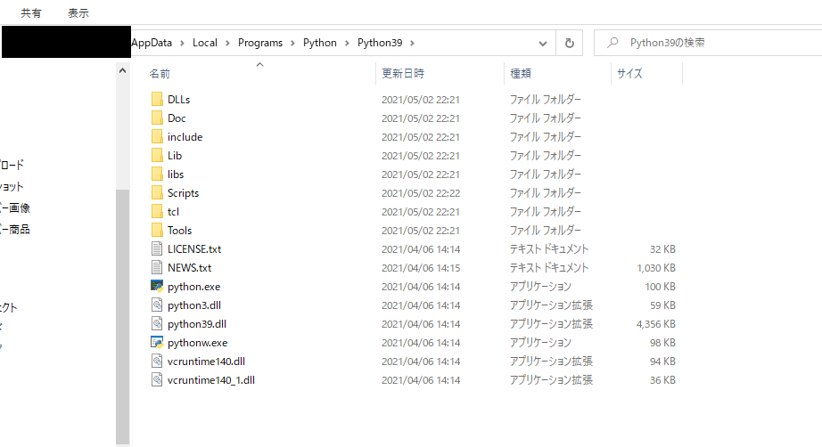
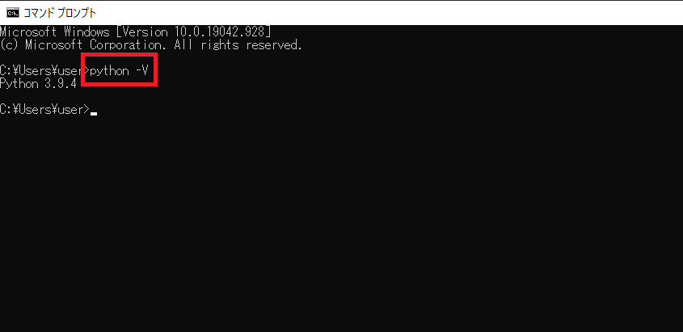
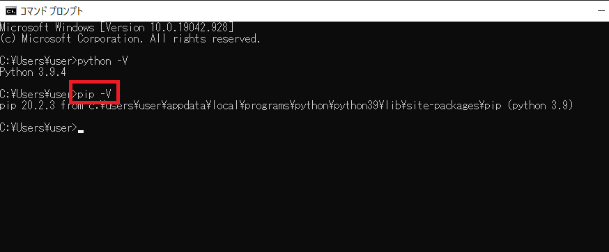

ここでは、Pythonの環境構築手順を簡単に紹介します。
時期や環境によっては下記画面と少し異なることもあると思いますが、大体の流れは変わらないと思います。
pythonのインストールは以下の手順で行います。
(ここでは Windows10 64bit でのPython3.9.4環境構築を紹介します。)
環境構築手順 |
| 1,Python公式サイトから、Pythonパッケージをダウンロードします 2,ダウンロードしたパッケージをインストールします。 3,コマンドプロンプトよりPythonの起動を確認します。 |
以下のリンク先からWindows用のインストーラをダウンロードします。
また、Pythonをインストールする方法としてAnacondaを利用する方法もあります。AnacondaはNumpyといったpythonでよく用いるライブラリをまとめてインストールしてくれます。
Anaconda に関する紹介は別項目を参照してください。
上記リンク先を開くと下のようなページが表示されるので、ページ上部の"Downloads"タブを選択します。

表示されるタブより"Windows"の項目を選択する。

遷移先ページ上部の"Latest Python 3 Release - Python 3.x.x"を選択。

遷移先ページ下のほうに行くと"File"という項目があるので、対応するインストーラーを選択して、ダウンロードしてください。
保存場所は任意の場所で問題ありません。

以上で、公式サイトからのダウンロード手順は終了です。
ダウンロードしたファイルを実行してインストーラーを起動してください。
起動すると下記画像のような画面が表示されるので、"Add Python 3.9 to PATH"にチェックをいれて、"Install now"を選択してください。
※インストール場所の指定やインストールファイルを限定したい場合は、"Customize installation"を選択してください。
[補足]"Add Python 3.9 to PATH"にチェックを入れることで、環境PATHに自動敵にPythonインストール先が登録されます。
チェックを入れ忘れても手動で環境PATHの設定は可能です。

インストール終了までしばらく待ちます。

インストールが終了すると下記画面が表示されるので、"Close"ボタンで作業を完了します。

以上でインストール作業は終了です。
デフォルトの場合は下記のようなフォルダが作成されている思いますので、確認してください。

コマンドプロンプトを起動します。(コマンドプロンプトの起動方法がわからないかたは以下を参考にしてください。)
コマンドプロンプト起動手順
以下のように入力して実行します。

インストールしたPythonのバージョンが表示されるはずです。
表示されていない場合は、環境PATHの設定ができていない可能性があるので環境PATH設定を確認してください。
同様に、以下のコマンドを実行してください。ンストールされているpipのバージョンが確認できるはずです。
※pipとはPython で利用できるパッケージのインストールを行う時に使用します。(インストールの際にカスタムでチェックを外している場合はインストールされません。)

上記のような表示がされれば、正しくPythonインストールフォルダへのPATHが通っています。
以上で環境構築手順紹介は終了です。
事項では簡単なプログラムの実行方法をご紹介します。